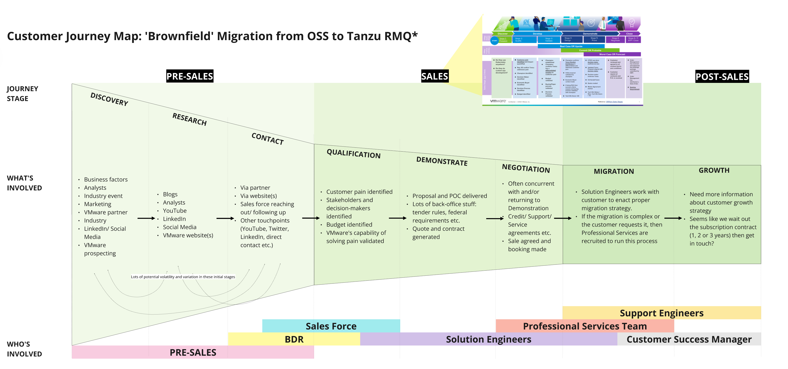
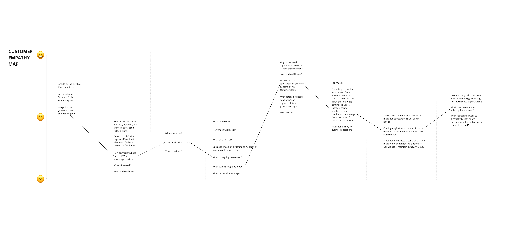
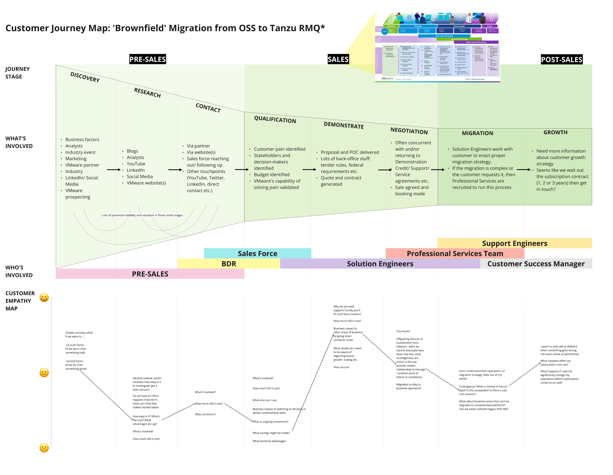

Prologue
RabbitMQ is one of the most widely deployed message brokers in the world. Millions of developers trusted the open-source version, but relatively few paid for the commercial edition.
Everyone assumed we needed better features.
So did I.
Until I realised we were searching for answers in the wrong place.
Act I
When you assume the problem, every data point confirms it.
The team had conducted excellent research asking prospective customers which features would persuade them to convert. The result was exactly what you'd expect: a prioritised wishlist.
My first task was to help evaluate those ideas and agree a plan of attack. I ran virtual workshops, comparing opportunities, analysing competitors and searching for alignment.
Feature evaluation

Workshop: analysing feature opportunities the team believed would drive conversion.
Conversion scoring

Impact vs effort: the conversation staying firmly inside the product.
As the team focused on the technical landscape, I observed an emerging emotional territory.
Overheard
- “If we don’t …”
- “Feature parity”
- “We’re falling behind”
- “Need something to announce”
The conversation wasn’t really about features, it was about a deep-rooted anxiety that we weren’t competitive.
And this niggling doubt drove all their exploration - so of course it was readily confirmed wherever they looked.
Act II
I stopped looking at the product.
After the workshop, I went through the interview recordings and for every “I wish we could…”, I heard smaller claims being made:
- “I can’t get approval on my own”
- “don’t have time…”
- “…complicated…”
None of these were product problems. They were friction surrounding procurement.
So I followed that thread and uncovered a truth hiding in plain sight: it was just… awful. And everyone knew it.
Price itself isn’t a problem; the fact it’s obscure and requires a lengthy quote process is.
But because no one had ever visualised it, customers were left to navigate a protracted fifteen-stage sales process involving seven separate teams, each sometimes unaware of the others’ involvement.
I started mapping this out for my own benefit, but as soon as I started showing it to other people I realised how powerful a simple diagram could be.
Act III
Making the invisible visible.
Once the commercial journey existed on one page, I overlaid the customer’s emotional experience. The result was uncomfortable because it made visible what everyone already knew but no one had seen as a whole.



The value of this artefact is that it was apolitical - it didn’t have to get sponsorship, find allies, persuade or argue. It simply said “fix me!” It was obvious.
Act IV
The question changed.
From
How do we improve the product?
To
How do we improve the experience before the product was even used?
An Education & Enablement working group was formed to look into the problems presented at each stage: Sales. Solution engineering. Documentation. Positioning. Messaging. Support. The work expanded beyond software.
But there was one question I still wanted answered.
Everyone had asked prospective customers what would make them buy. But nobody had asked existing customers why they already had.
The answer was incredibly consistent:
Support.
Act V
Support is not Support.
Almost without exception, everyone we spoke to told us they converted in a moment of crisis because they needed dedicated, expert support.
Customers approach us because they need support yesterday; they are panic-buying for dedicated support in a crisis.
That’s hard to convert to product value, but if you reframe this as
“panic-buying certainty that was needed yesterday”
then possibilities open up. So I interviewed existing customers about what support had actually given them.
It turned out “support” wasn’t support at all.
What support actually unlocked
Support meant confidence, expertise, compliance, safer collaboration, greater risk tolerance, access to new markets, peace of mind.
And collectively… those things created something much larger. By freeing up resources, providing stability, giving permission to explore and take risks… this naturally led to growth.
A path from support to growth - tap a step
Along the path
What support unlocked
Each step builds on the last - permissions that accumulate until growth becomes possible.
Support. Is. Growth. Support solved yesterday’s crisis. Growth explained next year’s renewal.
Epilogue
Designing outside the product.
This project permanently changed how I think about design.
Sometimes the product isn’t where the product problem lives. Sometimes it exists:
- before the interface
- after the interface
- between teams
- inside organisations
- inside language
The journey map became the catalyst for creating a permanent Education & Enablement team, reshaping messaging, redesigning the website and rethinking how RabbitMQ’s value was communicated. The artefact wasn’t persuasive because it was beautifully designed.
It was persuasive because it allowed dozens of people to see the same problem at the same time.